Contenedores con Docker¶
Introducción¶
En este apartado se muestra y ejemplifica cómo se utiliza Docker desde cero, con las funcionalidades más básicas. Al terminarlo serás capaz de:
- Comprender qué es Docker.
- Instalar Docker en Ubuntu mediante la terminal.
- Utilizar los comandos
docker. - Descargar imágenes Docker desde Docker Hub.
- Diferenciar entre imágenes y contenedores, y consolidar los cambios de un contenedor en una nueva imagen.
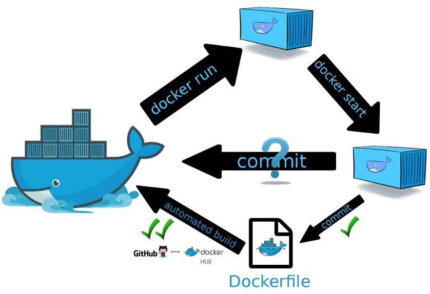
¿Qué es Docker?¶
Docker es un programa que realiza virtualización a nivel de sistema operativo, en unidades llamadas contenedores.
Existe un repositorio público donde se puede disponer de casi cualquier aplicación. Además, también es posible crear contenedores propios con un lenguaje muy sencillo.
A día de hoy, es la forma más sencilla de probar cualquier tipo de software, ya que no interfiere con el sistema operativo. Por ejemplo, si instalamos cualquier programa en Linux con apt, se instalarán librerías, se crearán directorios, cambiarán servicios, etc., y puede incluso que interfiera con la instalación actual. Con Docker, todo está dentro del contenedor. Se pueden tener distintas versiones corriendo simultáneamente, el mismo software corriendo múltiples veces, escalar automáticamente, actualizar y, si hay cualquier problema, volver a la versión anterior en cuestión de segundos.
Con Docker CE (Community Edition), la compañía ha decidido separar sus servicios empresariales, con servicios premium y de soporte, de la versión de la comunidad. ¿Significa eso que la versión de la comunidad tiene menos soporte o uso? No. Solo significa que es la gratuita. Como ejemplo, empresas como Amazon utilizan la Community Edition en sus servicios en la nube.
Los contenedores de Docker se construyen a partir de imágenes de Docker. Estas imágenes se obtienen de Docker Hub, un registro de imágenes gestionado por la empresa Docker. Cualquiera puede subir sus imágenes ahí, de modo que hay una gran librería de imágenes.
Instalación de Docker en Ubuntu¶
La instalación se realiza desde el repositorio oficial de Docker, siguiendo el procedimiento que indica la documentación oficial. Las acciones a realizar son:
1. Actualizar la lista de paquetes existentes del sistema.
sudo apt update
2. Instalar los paquetes de requisitos previos, que permiten descargar paquetes a través del protocolo HTTPS y verificar sus certificados.
sudo apt install ca-certificates curl
3. Añadir la clave GPG (GNU Privacy Guard) del repositorio oficial de Docker. Se crea el directorio donde APT guarda las claves de los repositorios, se descarga en él la clave de Docker y se le dan permisos de lectura:
sudo install -m 0755 -d /etc/apt/keyrings
sudo curl -fsSL https://download.docker.com/linux/ubuntu/gpg -o /etc/apt/keyrings/docker.asc
sudo chmod a+r /etc/apt/keyrings/docker.asc
4. Agregar el repositorio de Docker a las fuentes de APT:
echo "deb [arch=$(dpkg --print-architecture) signed-by=/etc/apt/keyrings/docker.asc] https://download.docker.com/linux/ubuntu $(. /etc/os-release && echo "${UBUNTU_CODENAME:-$VERSION_CODENAME}") stable" | sudo tee /etc/apt/sources.list.d/docker.list > /dev/null
Este comando crea el fichero /etc/apt/sources.list.d/docker.list con la línea del repositorio. Las partes entre $( ) se sustituyen automáticamente por la arquitectura del equipo (por ejemplo, amd64) y por el nombre en clave de la versión de Ubuntu instalada (por ejemplo, noble en Ubuntu 24.04), de modo que el mismo comando sirve para cualquier versión. La opción signed-by indica a APT qué clave debe usar para verificar los paquetes de este repositorio.
5. Actualizar de nuevo la lista de paquetes, con el repositorio de Docker recién agregado.
sudo apt update
6. Comprobar desde qué repositorio se va a instalar Docker antes de instalarlo. Interesa que se instale desde el repositorio de Docker que se acaba de agregar, en lugar de desde el predeterminado de Ubuntu (podría dar problemas). Para ello se ejecuta:
apt-cache policy docker-ce
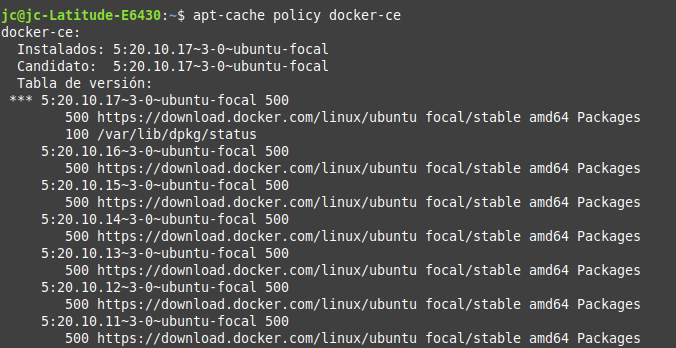
Se muestra la lista de versiones disponibles y el repositorio del que procede cada una. Como se puede comprobar en la figura, todas proceden de download.docker.com, el repositorio de Docker recién agregado, así que todo es correcto. (La captura corresponde a un Ubuntu 20.04, focal; en tu equipo aparecerá el nombre de tu versión.)
7. Instalar Docker (la versión de la comunidad, Community Edition) junto con sus componentes:
sudo apt install docker-ce docker-ce-cli containerd.io docker-buildx-plugin docker-compose-plugin
Donde:
docker-ce: el motor de Docker (el demonio que gestiona los contenedores).docker-ce-cli: el cliente, es decir, el comandodocker.containerd.io: el entorno de ejecución que arranca y supervisa los contenedores.docker-buildx-plugin: la herramienta para construir imágenes.docker-compose-plugin: Docker Compose, para definir aplicaciones de varios contenedores.
8. Docker ya está instalado y, como demonio de Ubuntu, se puede manejar mediante systemctl o service:
sudo systemctl status docker
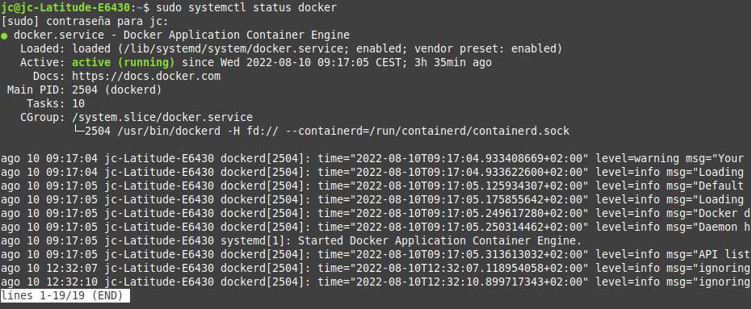
Una vez instalado, para probar su funcionamiento se puede ejecutar:
sudo docker run hello-world
Note
Con este comando le pedimos a Docker que cree un contenedor con un programa llamado hello-world y que luego lo ejecute.
Si funciona, significa que Docker se ha instalado correctamente, que puede conectar con el servidor, descargar una imagen, ejecutarla y mostrar el resultado.
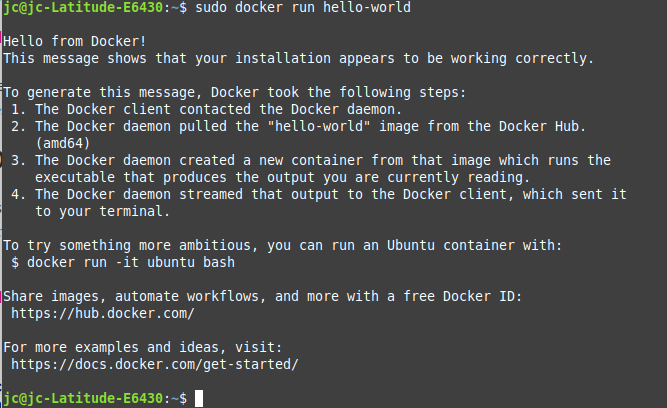
Pasos post-instalación¶
Una vez instalado Docker y probado su funcionamiento, el siguiente paso es configurar un usuario para utilizar Docker.
Por defecto, el comando docker, que se comunica con el demonio Docker, está configurado para ser utilizado por root o por los usuarios del grupo docker, que se crea automáticamente durante la instalación.
Los superusuarios (sudoers, pertenecientes al grupo sudo) también pueden usar estos comandos anteponiendo sudo. Para no tener que usar sudo siempre, basta con agregar el usuario al grupo docker:
sudo usermod -aG docker $USER
Donde $USER es el usuario que se desea añadir al grupo (puedes escribir su nombre directamente) para que pueda utilizar los comandos Docker sin prefijarlos con sudo y sin ser root durante la tarea diaria.
Tip
El cambio de grupo no se aplica hasta que el usuario cierra sesión y vuelve a entrar (o ejecuta newgrp docker).
Vista rápida del comando docker¶
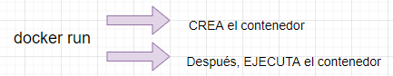
1. Listar los subcomandos disponibles¶
Ejecutando el comando docker en la consola se listan todos los subcomandos disponibles.
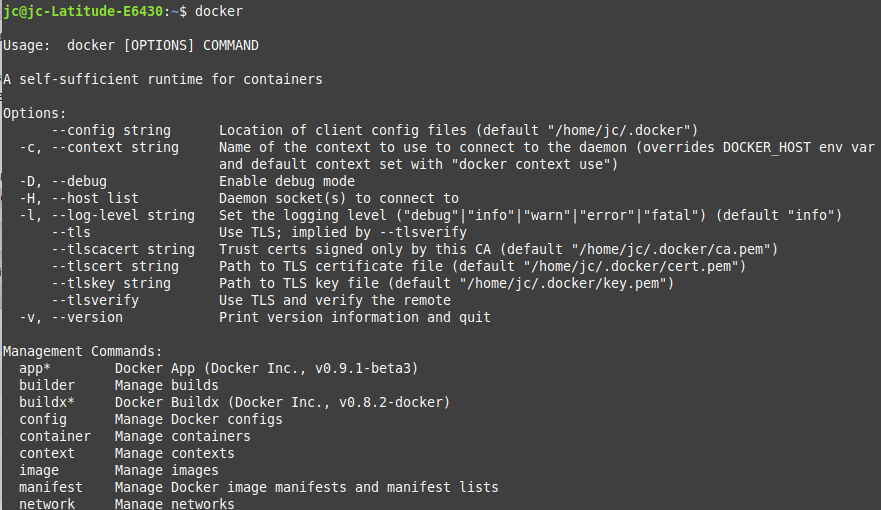
2. Listar las opciones de un subcomando¶
Con docker <subcomando> --help se consultan las opciones disponibles de un subcomando concreto.
3. Ejecutar un contenedor¶
Con el comando docker run primero se crea un contenedor a partir de una imagen (si no se tiene en local, se descarga de Docker Hub) y después se ejecuta dicho contenedor. Ejemplo: docker run hello-world.
4. Buscar una imagen¶
Con docker search [opciones] <término> se busca una imagen en Docker Hub. Ejemplo: docker search ubuntu.
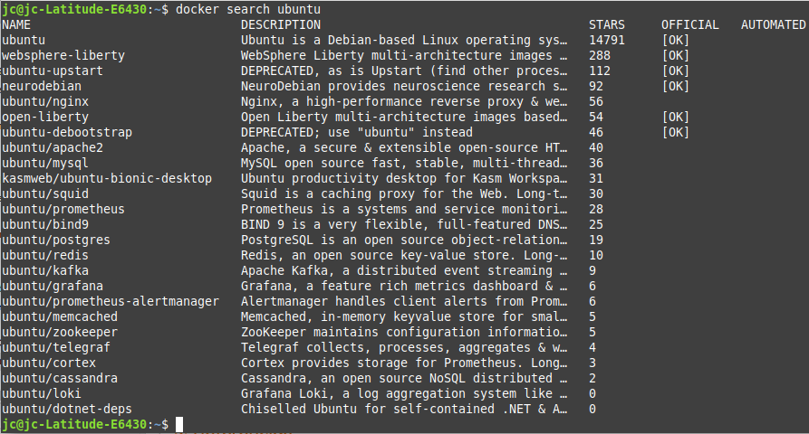
5. Descargar una imagen¶
Para descargar una imagen concreta se utiliza docker pull:
docker pull ubuntu
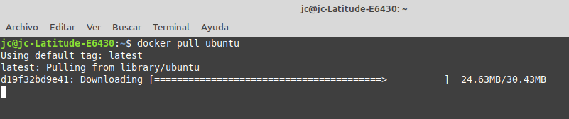
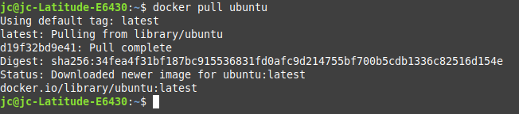
6. Consultar las imágenes descargadas¶
Para consultar las imágenes que hemos descargado se utiliza docker images:
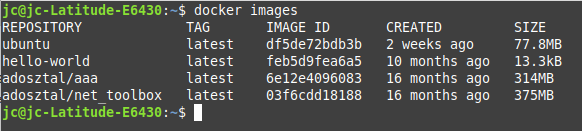
Note
Las imágenes que descargamos de Docker Hub pueden modificarse para crear imágenes nuevas y estas, a su vez, pueden subirse a Docker Hub o a otros registros de Docker.
7. Ejecutar contenedores¶
Para ejecutar un contenedor de forma interactiva se usa docker run -it <imagen>. Por ejemplo:
docker run -it ubuntu
-iy-tsirven para que el proceso del contenedor sea interactivo con la terminal de Linux.
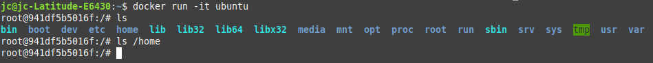
Como se aprecia en la figura, la segunda línea ya es la terminal del Ubuntu que se ejecuta en el contenedor.
Para salir del contenedor hay que escribir exit.
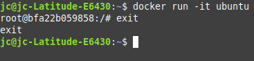
Si se desea dar un nombre a la instancia en lugar de que Docker le asigne uno aleatorio:
docker run -it --name ubuntu-dam ubuntu
Donde:
--name ubuntu-dam: es el nombre que se le quiere dar al contenedor, en este casoubuntu-dam.ubuntu: es el nombre de la imagen a partir de la que se crea.
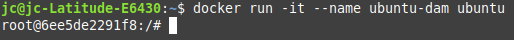
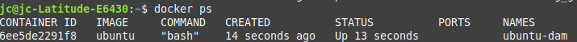
8. Consultar los contenedores en ejecución¶
Para consultar los contenedores que están corriendo se utiliza docker ps.
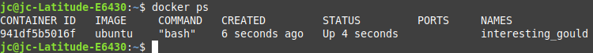
Para consultar todos los contenedores, tanto activos como detenidos, se utiliza docker ps -a.
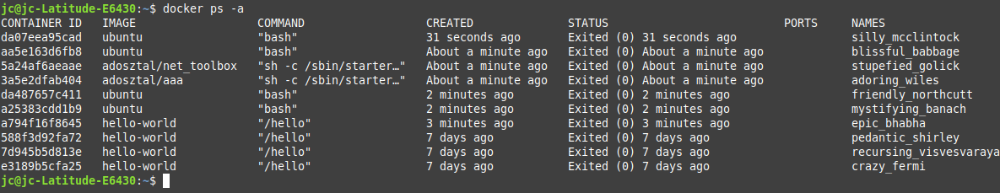
Por último, para consultar el último contenedor creado se utiliza docker ps -l.
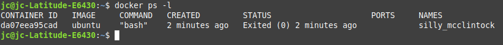
9. Iniciar un contenedor detenido¶
Para iniciar un contenedor detenido (no confundir con docker run, que crea uno nuevo):
docker start <id|nombre_contenedor>
10. Borrar un contenedor¶
docker rm <id|nombre_contenedor>
Ejemplo:
docker rm ubuntu-dam
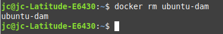
11. Borrar un contenedor por su ID¶
Para eliminar contenedores por su ID, primero se listan los contenedores para conocer su ID:
docker ps -a
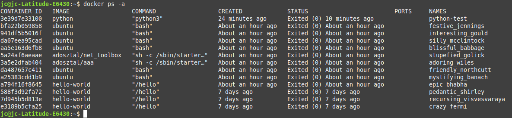
En este caso se elimina el contenedor con ID 3e39d7e33100.
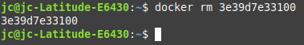
Si se consulta de nuevo la lista de contenedores, ya no aparece el que se acaba de borrar.
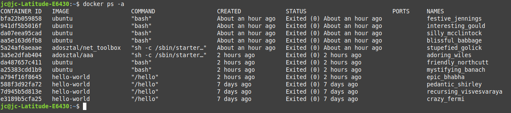
Se pueden borrar varios contenedores a la vez indicando sus ID separados por espacios:
docker rm a794f16f8645 588f3d92fa72 7d945b5d813e e3189b5cfa25
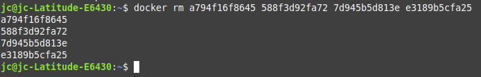
12. Borrar una imagen¶
Para borrar una imagen se utiliza docker rmi seguido de la imagen que se desea eliminar. Para conocer el ID de la imagen se puede utilizar docker images -a. En este ejemplo se elimina la imagen de hello-world:
docker rmi feb5d9fea6a5
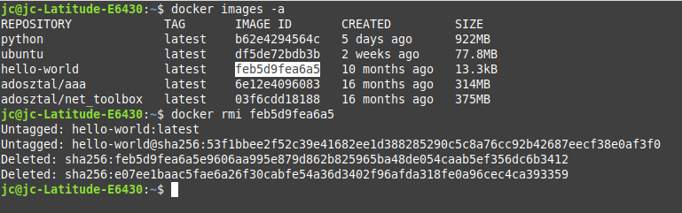
Consolidar los cambios de un contenedor¶
Cuando se crea un contenedor con docker run <imagen>, se pueden modificar y eliminar archivos y hacer lo que se quiera con él. Pero todos esos cambios solo se guardan en ese contenedor, de manera que, si se hace docker rm para eliminarlo, se perderá todo.
Para evitarlo, se pueden consolidar los cambios en una nueva imagen de Docker, de forma que se pueda compartir fácilmente y tener siempre una copia del contenedor en el estado deseado.
Creando un contenedor con un servidor web en una máquina virtual Ubuntu Server
Hay muchas imágenes en el registro público Docker Hub. Por ejemplo, podemos crear un servidor web con Apache (httpd):
docker run -d --name my-apache-app -p 8080:80 httpd
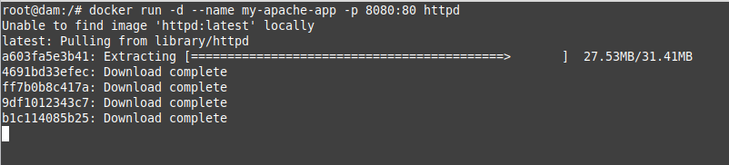
El contenedor se está ejecutando y, con la opción -p, mapeamos un puerto del equipo donde está instalado Docker con un puerto del contenedor: si accedemos a la IP del equipo que tiene Docker (en este caso un Ubuntu Server) por el primer puerto indicado, la petición se redirige al contenedor por el segundo puerto indicado. Nunca utilizamos directamente la IP del contenedor para acceder a él.
Para probarlo, accede desde un navegador a la IP del servidor con Docker y al puerto 8080 (en el ejemplo, http://192.168.0.25:8080):
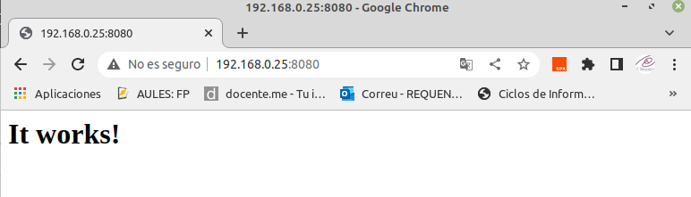
Consultar el log¶
Para acceder al log del contenedor podemos ejecutar:
docker logs my-apache-app
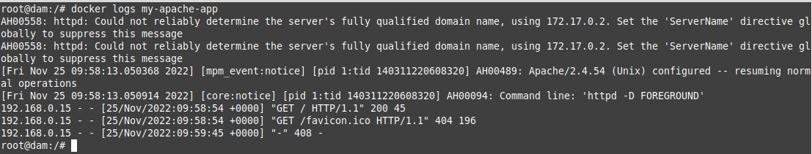
Con la opción docker logs -f seguimos visualizando los logs en tiempo real.
Modificar el contenido del servidor web¶
Si consultamos la documentación de la imagen httpd en Docker Hub, vemos que el servidor web del contenedor guarda sus ficheros (directorio DocumentRoot) en /usr/local/apache2/htdocs/. Vamos a crear un nuevo fichero index.html en ese directorio.
Lo podemos hacer de varias formas:
1. Accediendo de forma interactiva al contenedor y haciendo la modificación:
docker exec -it my-apache-app bash
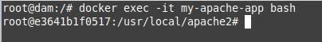
Ya dentro del contenedor:
cd /usr/local/apache2/htdocs/
echo "<h1>Servidor Web - Docker</h1>" > index.html
exit
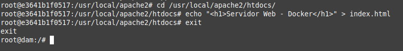
2. Ejecutando directamente el comando de creación del fichero en el contenedor:
docker exec -it my-apache-app bash -c 'echo "<h1>Servidor Web - Docker</h1>" > /usr/local/apache2/htdocs/index.html'
Independientemente de cómo hayamos creado el fichero, podemos volver a acceder al servidor web y comprobar que se ha modificado el contenido del index.html:
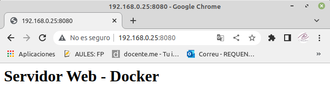
Guardar los cambios en una nueva imagen¶
Para consolidar el contenedor modificado en una imagen nueva se utiliza docker commit:
docker commit my-apache-app mi-apache:v1
docker images
A partir de esa imagen se pueden crear nuevos contenedores que ya incluyen la web modificada:
docker run -d --name apache-copia -p 8081:80 mi-apache:v1
Referencias¶
- Docker Hub: repositorio con gran cantidad de imágenes de contenedores ya configuradas. Además, actúa como hosting gratuito para alojar imágenes, tanto de forma pública como privada.
- Cómo eliminar imágenes, contenedores y volúmenes de Docker
- Cómo crear un contenedor con Docker-MySQL y persistir la información